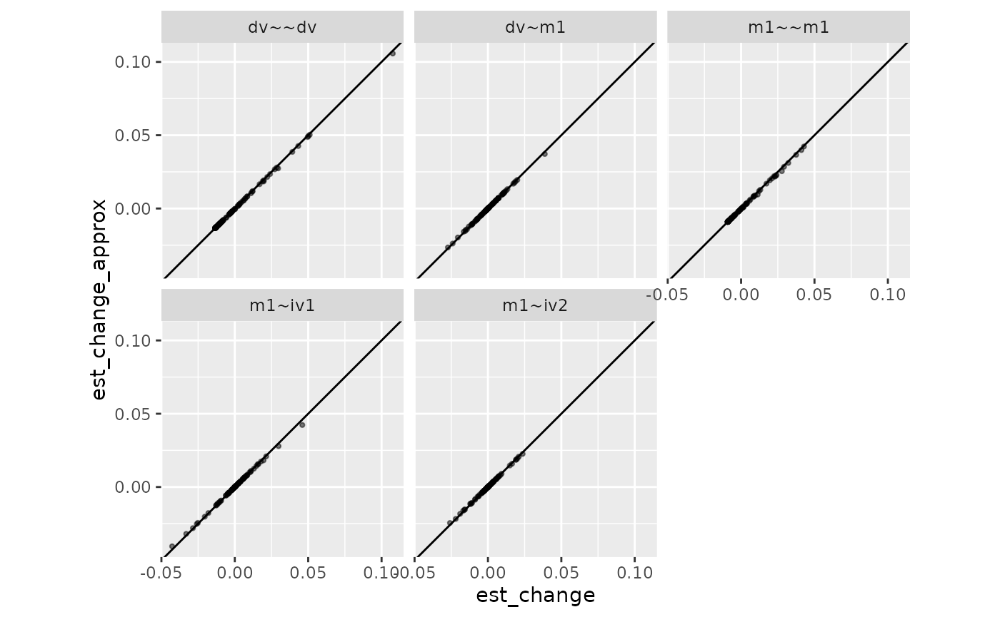
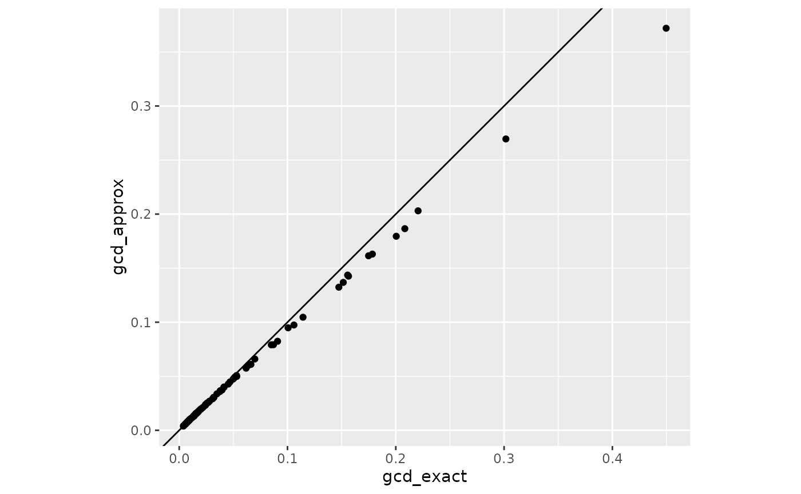
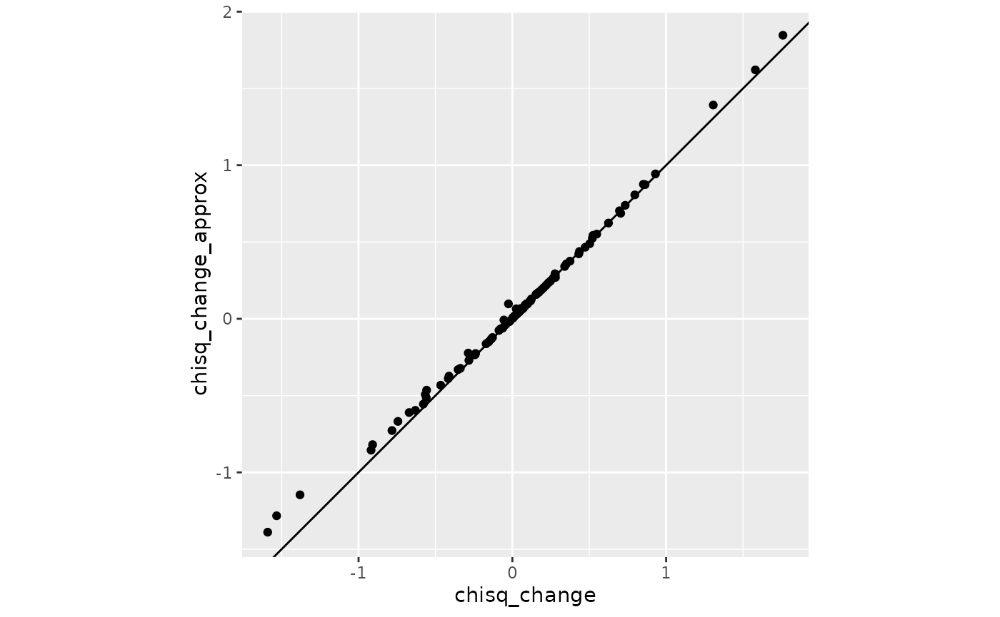
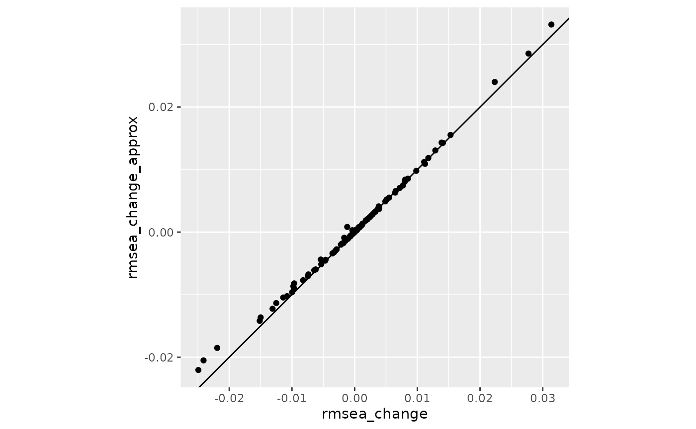

Approximate Case Influence Using Scores and Casewise Likelihood
2025-01-25
Source:vignettes/casewise_scores.Rmd
casewise_scores.RmdThis vignette explains the computational shortcut implemented in semfindr to approximate the casewise influence. The approximation is most beneficial when the sample size N is large, where the approximation works better and the computational cost for refitting models N times is high.
library(lavaan)
#> This is lavaan 0.6-19
#> lavaan is FREE software! Please report any bugs.
mod <-
"
m1 ~ iv1 + iv2
dv ~ m1
"
fit <- sem(mod, dat)
if (file.exists("semfindr_fit_rerun.RDS")) {
fit_rerun <- readRDS("semfindr_fit_rerun.RDS")
} else {
fit_rerun <- lavaan_rerun(fit)
saveRDS(fit_rerun, "semfindr_fit_rerun.RDS")
}Using Scores to Approximate Case Influence
lavaan provides the handy lavScores()
function to evaluate
for observation
,
where
denotes the casewise loglikelihood function and
is the
th
model parameter.
For example,
head(lavScores(fit)[ , 1, drop = FALSE])
#> m1~iv1
#> [1,] 0.23975993
#> [2,] 0.06630118
#> [3,] -0.33999129
#> [4,] -0.22536120
#> [5,] 0.61375747
#> [6,] 0.03747179indicates the partial derivative of the casewise loglikelihod with
respect to the parameter m1~iv1. Because the sum of the
partial derivatives across all observations is zero at the maximum
likelihood estimate with the full sample
(;
i.e., the derivative of loglikelihood of the full data is 0),
can be used as an estimate of the partial derivative of the
loglikelihood at
for the sample without observation
.
This information can be used to approximate the maximum likelihood
estimate for
when case
is dropped, denoted as
The second-order Taylor series expansion can be used to approximate the parameter vector estimate with an observation deleted, , as in the iterative Newton’s method. Specifically,
where is the gradient vector of the casewise loglikelihood with respect to the parameters (i.e., score). The term is used to adjust for the decrease in sample size (this adjustment is trivial in large samples). This procedure should be the same as equation (4) of Tanaka et al. (1991) (p. 3807) and is related to the one-step approximation described by Cook and Weisberg (1982) (p. 182).
Comparison
The approximation is implemented in the
est_change_raw_approx() function:
fit_est_change_approx <- est_change_raw_approx(fit)
fit_est_change_approx
#>
#> -- Approximate Case Influence on Parameter Estimates --
#>
#> id m1~iv1 id m1~iv2 id dv~m1 id m1~~m1 id dv~~dv
#> 1 51 0.042 43 -0.025 65 0.037 61 0.042 16 0.106
#> 2 43 -0.040 94 0.023 11 -0.027 85 0.040 9 0.050
#> 3 34 -0.032 100 -0.022 16 -0.024 100 0.037 76 0.049
#> 4 18 -0.028 85 0.021 32 -0.020 18 0.031 25 0.049
#> 5 13 0.028 20 0.020 99 0.020 42 0.028 91 0.043
#> 6 32 -0.025 32 0.019 79 0.018 43 0.025 17 0.039
#> 7 20 -0.024 65 0.019 93 0.018 32 0.023 26 0.028
#> 8 75 0.021 34 -0.018 22 0.017 34 0.022 65 0.027
#> 9 42 -0.020 64 -0.016 61 -0.016 40 0.022 62 0.027
#> 10 68 0.018 52 0.016 25 -0.015 20 0.022 90 0.024
#>
#> Note:
#> - Changes are approximate raw changes if a case is included.
#> - Only the first 10 case(s) is/are displayed. Set 'first' to NULL to display all cases.
#> - Cases sorted by the absolute changes for each variable.Here is a comparison between the approximation using
semfindr::est_change_raw_approx() and
semfindr::est_change_raw()
# From semfindr
fit_est_change_raw <- est_change_raw(fit_rerun)
# Plot the differences
library(ggplot2)
tmp1 <- as.vector(t(as.matrix(fit_est_change_raw)))
tmp2 <- as.vector(t(as.matrix(fit_est_change_approx)))
est_change_df <- data.frame(param = rep(colnames(fit_est_change_raw),
nrow(fit_est_change_raw)),
est_change = tmp1,
est_change_approx = tmp2)
ggplot(est_change_df, aes(x = est_change, y = est_change_approx)) +
geom_abline(intercept = 0, slope = 1) +
geom_point(size = 0.8, alpha = 0.5) +
facet_wrap(~ param) +
coord_fixed()
The results are pretty similar.
Generalized Cook’s distance (gCD)
We can use the approximate parameter changes to approximate the gCD (see also Tanaka et al., 1991, equation 13, p. 3811):
# Information matrix (Hessian)
information_fit <- lavInspect(fit, what = "information")
# Short cut for computing quadratic form (https://stackoverflow.com/questions/27157127/efficient-way-of-calculating-quadratic-forms-avoid-for-loops)
gcd_approx <- (nobs(fit) - 1) * rowSums(
(fit_est_change_approx %*% information_fit) * fit_est_change_approx
)This is implemented in the est_change_approx()
function:
fit_est_change_approx <- est_change_approx(fit)
fit_est_change_approx
#>
#> -- Approximate Standardized Case Influence on Parameter Estimates --
#>
#> m1~iv1 m1~iv2 dv~m1 m1~~m1 dv~~dv gcd_approx
#> 16 0.052 -0.038 -0.228 -0.006 0.572 0.372
#> 43 -0.387 -0.249 -0.135 0.201 0.116 0.270
#> 65 0.150 0.189 0.355 0.071 0.148 0.203
#> 85 -0.170 0.211 -0.118 0.315 -0.054 0.187
#> 51 0.405 -0.052 0.094 0.075 -0.046 0.179
#> 34 -0.306 -0.186 -0.110 0.176 0.028 0.163
#> 32 -0.241 0.190 -0.189 0.181 -0.002 0.161
#> 20 -0.234 0.199 -0.140 0.172 -0.034 0.144
#> 18 -0.269 0.035 0.101 0.246 -0.048 0.143
#> 100 -0.001 -0.221 -0.069 0.290 -0.058 0.137
#>
#> Note:
#> - Changes are approximate standardized raw changes if a case is included.
#> - Only the first 10 case(s) is/are displayed. Set 'first' to NULL to display all cases.
#> - Cases sorted by approximate generalized Cook's distance.
# Compare to exact computation
fit_est_change <- est_change(fit_rerun)
# Plot
gcd_df <- data.frame(
gcd_exact = fit_est_change[ , "gcd"],
gcd_approx = fit_est_change_approx[ , "gcd_approx"]
)
ggplot(gcd_df, aes(x = gcd_exact, y = gcd_approx)) +
geom_abline(intercept = 0, slope = 1) +
geom_point() +
coord_fixed()
The approximation tend to underestimate the actual gCD but the rank ordering is almost identical. This is discussed also in Tanaka et al. (1991), who proposed a correction by applying a one-step approximation after the correction (currently not implemented due to the need to recompute scores with updated parameter values).
cor(gcd_df, method = "spearman")
#> gcd_exact gcd_approx
#> gcd_exact 1.000000 0.999892
#> gcd_approx 0.999892 1.000000Approximate Change in Fit
The casewise loglikelihood—the contribution to the likelihood
function by an observation—can be computed in lavaan, which
approximates the change in loglikelihood when an observation is
deleted:
lli <- lavInspect(fit, what = "loglik.casewise")
head(lli)
#> [1] -2.776787 -2.034084 -2.154825 -2.248100 -2.793426 -2.049238Here, will drop 2.78 when observation 1 is deleted. This should approximate as long as is not too different from . Here’s a comparison:
# Predicted ll without observation 1
fit@loglik$loglik - lli[1]
#> [1] -289.8272
# Actual ll without observation 1
fit_no1 <- sem(mod, dat[-1, ])
fit_no1@loglik$loglik
#> [1] -289.8156They are pretty close. To approximate the change in
,
as well as other
-based
fit indices, we can use the fit_measures_change_approx()
function:
chisq_i_approx <- fit_measures_change_approx(fit)
# Compare to the actual chisq when dropping observation 1
c(predict = chisq_i_approx[1, "chisq"] + fitmeasures(fit, "chisq"),
actual = fitmeasures(fit_no1, "chisq"))
#> predict.chisq actual.chisq
#> 6.871042 6.557397Comparing exact and approximate changes in fit indices
Change in
# Exact measure from semfindr
out <- fit_measures_change(fit_rerun)
# Plot
chisq_change_df <- data.frame(
chisq_change = out[ , "chisq"],
chisq_change_approx = chisq_i_approx[ , "chisq"]
)
ggplot(chisq_change_df, aes(x = chisq_change, y = chisq_change_approx)) +
geom_abline(intercept = 0, slope = 1) +
geom_point() +
coord_fixed()
Change in RMSEA
# Plot
rmsea_change_df <- data.frame(
rmsea_change = out[ , "rmsea"],
rmsea_change_approx = chisq_i_approx[ , "rmsea"]
)
ggplot(rmsea_change_df, aes(x = rmsea_change, y = rmsea_change_approx)) +
geom_abline(intercept = 0, slope = 1) +
geom_point() +
coord_fixed()
The values aligned reasonably well along the 45-degree line.
Limitations
The approximate approach is tested only for models fitted by maximum likelihood (ML) with normal theory standard errors (the default).
The approximate approach does not yet support multilevel models.
The lavaan object will be checked by
approx_check() to see if it is supported. If not, an error
will be raised.
References
Cook, R. D., & Weisberg, S. (1982). Residuals and influence in regression. New York: Chapman and Hall. https://conservancy.umn.edu/handle/11299/37076
Tanaka, Y., Watadani, S., & Ho Moon, S. (1991). Influence in covariance structure analysis: With an application to confirmatory factor analysis. Communications in Statistics - Theory and Methods, 20(12), 3805–3821. https://doi.org/10.1080/03610929108830742